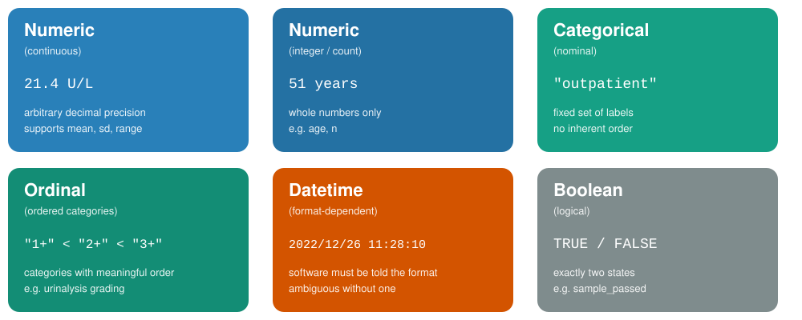
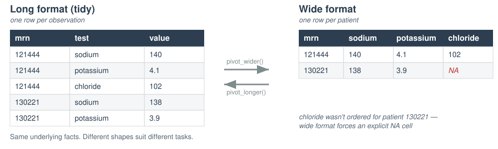

The faculty, committee members, and staff who are in position to control the content of this activity are required to disclose to MSACL and to learners any financial relationships that have occurred within the last 24 months with ineligible companies whose primary business is producing, marketing, selling, re-selling, or distributing healthcare products used by or on patients. MSACL has reviewed the disclosures and mitigated all relevant financial relationships.
You can view the financial disclosures of any Steering / Scientific Committee Member or Podium Presenters (except for Industry Workshops, which do not qualify for CME credit) on the MSACL website directly underneath the person’s name. Click “Review Relevant Financial Disclosures”.
MSACL staff associated with the development of content for this activity report no relevant financial relationships.
Relevant Financial Relationships
Company
Relationship
Ended?
None
Module 1 Learning Objectives
By the end of this module, you will be able to:
Situate data literacy within the broader landscape of data science and analytics as practiced in the clinical laboratory
Distinguish common data types and explain why type matters for downstream analysis
Identify whether a dataset follows tidy data principles — and articulate the tradeoffs
Recognize common data quality issues and their downstream consequences
Context
Where does this fit in data science?
Types
What can this value even do?
Structure
How easy is this to work with?
Quality
Can I trust this answer?
The DIKW Pyramid
Data is synthesized into information, then knowledge — and knowledge, in turn, can drive decision-making.
Data — raw observations, recorded systematically
Information — data organized to answer a specific question
Knowledge — information connected to context and experience
Wisdom — knowledge applied to make a sound decision
Everything in this course lives at the base of this pyramid — but the whole point of building a solid base is what it lets you build on top of it.
What Is Data Science?
Interdisciplinary field that uses computational methods, statistics, and broad analysis techniques (including visualization) to extract knowledge from data
Draws on a variety of academic disciplines, including mathematics, statistics, computer science, and information science/informatics
Critical to integrate domain knowledge: laboratory medicine
Computational Tools Support a Broad Data Lifecycle
Data science extends beyond analysis of data and includes considerations for capturing and maintaining data.
Capture — how data enters a system in the first place
Maintain — storage, structure, and quality over time
Analyze — the stage most people think of as “data science,” but only one part of the lifecycle
Statistics Helps Us Interpret Data Based on Expectations
Many categories of numeric lab data can be described by known distributions, e.g. the normal distribution
Statistical methods allow us to evaluate hypotheses about the data
Does the data fit a normal distribution? If not, why not?
Are the differences between these sets of observations significant?
Data Analytics Is a Subset of Data Science
Data analytics includes discovering useful information and conclusions to support decision-making from data:
Using real-world data
Visualization
Statistical and exploratory analysis
Machine learning
Communicating results
Data Science Can Be Categorized by How the Data Is Applied
Quadrant
Question
Time Orientation
Descriptive
What is happening?
Right now / recent past
Diagnostic
Why is it happening? What are the root causes?
Recent past
Predictive
What will happen? When might it happen?
Future
Prescriptive
What should we do?
Integrates predicted and past
Descriptive Analytics Are Becoming More Common Across Healthcare Settings
Example: a DLMP Quality Assurance Dashboard — surfacing current and recent-past lab performance metrics for ongoing monitoring.
Predictive Analytics Are Emerging in Multiple Domains
Example: a UWMC Phlebotomy Prediction model — using historical patterns to anticipate future draw volume.
What Is the Role of the Laboratorian?
Define the important problems to solve and/or questions to answer
Subject matter expert: those generating the data best understand the data
Perform and interpret routine analyses (e.g. quality control)
Support the validation of analyses done by others
Develop and/or perform new analyses for quality improvement
Data science tools are only as good as the domain expertise that directs them — and in the clinical lab, that expertise is yours.
1.1 What Is Data?
Before we touch R, we need a shared vocabulary for what we’re even looking at
What Is Data?
Data = observations recorded systematically
Every value in a dataset represents something measured, reported, or logged in the real world
Two categories worth separating:
Raw data — recorded as originally captured (an instrument reading, a timestamp)
Derived data — calculated or transformed from raw values (a turnaround time, a mean)
If you can’t say what real-world event a value represents, you don’t yet understand your data.
Data Representation
Data representation is the assignment of meaning to physical artifacts — characters, numbers, words, phrases — as electronic states of computer memory.
Unstructured data (human language): extremely flexible; form and usage vary with location and time; context-dependent
Structured data: constrained language; well-defined syntax and semantics
A data standard is a formal agreement on data representation — the thing that allows data to be shared and interoperate across systems
Why Structure Matters — Before Any Analysis
The same facts can be organized many different ways
Structure determines:
What questions are easy to answer
What questions are possible to answer at all
How easily errors are introduced or hidden
We’ll return to this directly in section 1.3 (Tidy Data)
Structure is a decision you make — not a fact about the data itself.
1.2 Data Types
Six categories cover almost everything you’ll encounter in clinical and MS data
Why Data Types Matter
A data type isn’t just a technical label — it determines:
What operations are valid (can you average it? sort it? subtract it?)
How software will interpret ambiguous values
Whether a value like "NA" means missing or literally the state of Nebraska
Misidentifying a type is one of the most common — and most silent — sources of analysis errors.
A wrong data type doesn’t crash your code. It just quietly gives you the wrong answer.
Common Data Types

Poll: How Many Ways Can “100” Be Represented in a Computer?
Take a moment before the next slide — how many representations can you think of?
Representation Has Functional Implications
All representations of a number are ultimately binary — but the form matters:
Integer — can’t divide with a decimal result or include directly in text
Floating point — inexact, can’t include directly in text
Character string — can’t do math without conversion
Medical systems often represent numbers as text: it saves space for usual-sized numbers, display is often the primary purpose, and math is converted only when needed.
A Special Case: Censored / Below-LOD Values
Clinical and MS data often contain values reported as “<0.5” or “undetectable”
These are not missing — they are a special type: censored data
The true value is known to be somewhere below a threshold, not unknown entirely
Treating a censored value as missing (or worse, as zero) can distort every downstream summary statistic
Note
We will not perform formal censored-data statistics in this course — but recognizing these values when you see them is essential data literacy.
No column tells you the type — you have to infer it from the value and context
NA appears twice, but for two different reasons
The datetime has no explicit format label — R will have to be told how to read it (Module 2)
Every column in this row is a small decision you’ll have to make deliberately.
Data Frames
A data frame is a two-dimensional collection of heterogeneous data
Spreadsheet-like data — typically organized in columns with a fixed data type
Columns (or variables) are often explicitly named
Identifier
Location
Test
Value
F123456
Inpatient
Sodium
140
W987654
Outpatient
Potassium
4.8
X234537
ED
AST
70
Everything you’ll do in R starts from data shaped like this.
Before We Start: Orienting in RStudio
This module has no R code — but we’ll still work inside RStudio.
Today, RStudio is simply a text editor: a place to open files, read them carefully, and record your answers.
Open the course project — double-click the .Rproj file
In the Files pane, open updates_2026/exercises/module_1_exercises.qmd
This file opens in the Source pane — you’ll type your answers directly into it
Save often (Cmd/Ctrl+S) — nothing here runs or executes
Getting oriented now — before anything needs to run — is what makes Module 2 feel easy instead of overwhelming.
Why RStudio — Even for a Non-Coding Module?
One consistent home for course materials, exercises, and (soon) code
The Source pane doubles as a plain-text and Markdown editor
Getting comfortable navigating panes before you need to run anything lowers the stakes
Module 2 will introduce RStudio as a computational tool — today is just geography
Today
RStudio as a text editor — read, navigate, record answers
Module 2+
RStudio as a computational tool — import, transform, visualize
→ Check-in 1A: Spot the Types
⏱ 10 minutes
Open chem_data.csv in a plain text editor (not RStudio — a real text editor).
For each of the 13 columns, predict the data type and flag any concerns.
Which columns look numeric vs. categorical?
Where might censored or missing values be hiding?
Which column will need an explicit datetime format?
Return to module_1_exercises.qmd in RStudio to record your answers.
1.3 Tidy Data Principles
The same facts, organized differently, can make an analysis easy or nearly impossible
Three Principles of Tidy Data
A dataset is tidy when:
Every variable has its own column
Every observation has its own row
Every value has its own cell
Not a matter of taste — a precise, checkable definition
Most tidyverse tools assume tidy input
Tidy data isn’t prettier data. It’s data shaped for the tools you’re about to use.
The Same Facts, Two Structures

Same information — very different shapes. Notice the explicit NA that appears only once the data is widened.
Tradeoffs: Long vs. Wide
Long (tidy)
Wide
Add a new analyte
Add rows
Add a column, restructure
Filter by analyte
Easy (filter())
Awkward
Human-readable summary table
Harder to scan
Easy to scan
Feed into ggplot2
Usually required
Usually needs reshaping first
Neither format is “wrong” — but one is almost always easier for a given task
The tidyverse gives you tools (pivot_longer(), pivot_wider()) to convert between them — we’ll see these in Module 4
Tidy Data Summarized
A dataset is tidy if:
Each variable is in its own column
Each observation is in its own row
Each value is in its own cell
MRN, test, value, and every other measured fact each get their own column — and every patient/analyte combination gets its own row.
→ Check-in 1B: Tidy or Not Tidy?
⏱ 8 minutes
Compare chem_data.csv (long) and chem_data_wide.csv (wide).
Answer three written questions in module_1_exercises.qmd:
Which tidy principle does the wide format bend?
When is each format easier to use?
What would you need to do to a wide file before analyzing it in R?
1.4 Data Quality and Common Pitfalls
Plausible-looking data is not the same thing as trustworthy data
Data Quality
Dimension
Question
Completeness
Is data present and available?
Correctness
Is data true?
Concordance
Is there agreement and consistency between data elements?
Plausibility
Does data make sense in the clinical context?
Currency
Is data a relevant representation at a defined point in time?
Common Data Quality Issues
Missing values — and knowing why they’re missing (not tested vs. not applicable vs. lost)
Duplicate rows — same observation recorded more than once
Out-of-range values — a pH of 45, an age of 200
Encoding inconsistencies — "Male" vs. "M" vs. "male" treated as three different categories
Timestamp errors — a verify time earlier than the collect time
Each of these can silently corrupt a downstream summary — often without any error message.
Why “Silent” Errors Are the Dangerous Ones
Software rarely stops and warns you when data is plausible but wrong
A mis-encoded category doesn’t crash your analysis — it just quietly gets excluded, or double-counted
This is exactly why Module 2 introduces a validation checklist as a required first step, every time you import data
The most dangerous bugs are the ones that produce an answer — just the wrong one.
Bringing It Together
Data types
Determine what’s even possible to compute
Tidy structure
Determines what’s easy to compute
Data quality
Determines whether your answer is trustworthy
Three habits. Zero lines of R code. All essential before you ever open a script.
Coming Up: Module 2
RStudio as a computational tool, not just a text editor
How to set up a project so your code runs the same way on any machine
Importing chem_data.csv with the tidyverse
Correcting the types you predicted today
A hands-on data validation checklist
Bring your laptop, charged, with R and RStudio installed.
References & Acknowledgements
James Harrison, Introduction to Pathology Informatics, Session 8: Cybersecurity, API Distribution 1.0, 2023. Available at: https://www.pathologyinformatics.org/teaching-slide-sets
Robert Benirschke & Chris McCudden for slides adapted from ADLM Data Science Certificate materials